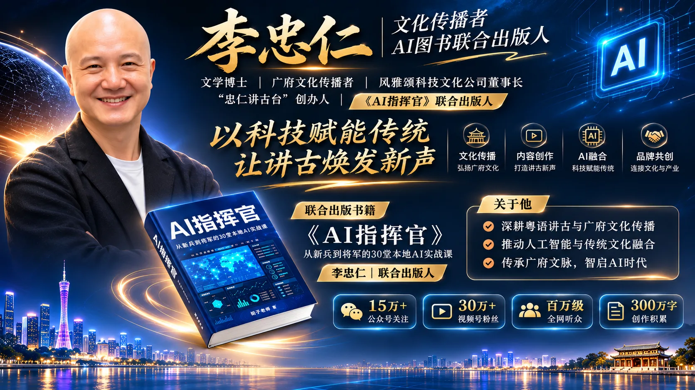
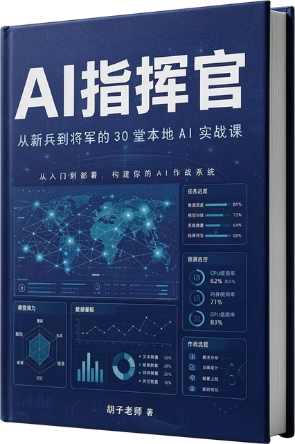

《AI指挥官》联合出版人
李忠仁
广府文化传播者 · 忠仁讲古台创办人
NO.023文化·传媒24 位联合出版人之一
个人简介
个人简介
文学博士，风雅颂科技文化公司董事长，广府文化传播者，"忠仁讲古台"创办人。声线浑厚，余韵悠长——讲英雄，荡气回肠；讲风物，风雅流芳；讲岭南旧事，意味深长。公众号十五万关注，视频号三十万粉丝，全网坐拥百万听众，堪称当代讲古文化的一面旗帜，声名远播海内外。他写下三百万网文，更潜心备下十几部广府题材剧本，从"经商与写作并行"走向"粤语讲古，传承广府文脉"，让岭南故事从纸上讲到台上、从台上搬上银幕，构建文字、声音、影像三位一体的内容版图。身为《AI指挥官》联合出版人，以科技赋能传统，探索智能时代人机协作的全新范式，让千年讲古在智能时代焕发新声，为传统口头文学开新路、立标杆、树榜样、续写华章。

代表观点
来自本人简介的表述
让千年讲古在智能时代焕发新声
李忠仁 · 广府文化传播者 · 忠仁讲古台创办人
该句摘自本人公开简介，未做改写。
共建关系
与《AI指挥官》同行

一本书连接来自产业一线的实践者。李忠仁以联合出版人身份与《AI指挥官》同行，把个人的产业视角放进共同学习与交流的网络。
胡子老师 著 · 从新兵到将军的 30 堂本地 AI 实战课 · 8 篇 31 章 · 9 项附录

一本书，一群同行者
从一位成员的产业经验，认识更多与《AI指挥官》同行的人。
返回完整名录 →